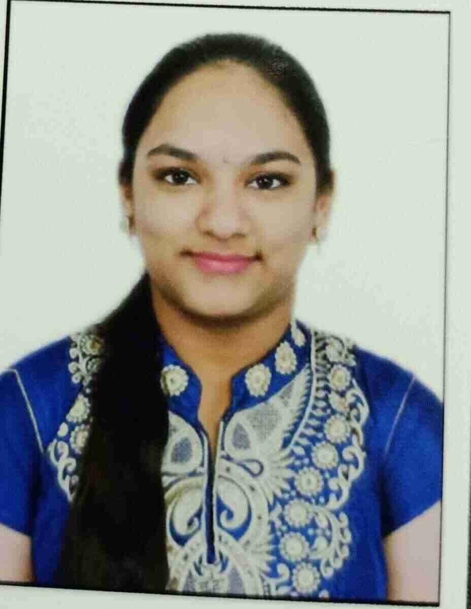

Champa V

Summary
Looking to work in an organization that can provide a variety of opportunities that allow me to expand my skills and knowledge while working towards achieving the organizational goals.
Education
- High School from RV Girls High School(2016-2019)
- PUC from PES PU College(2019-2021)
- Bachelor of Computer Applications -SSMRV Degree College(2021-present)
Work Experience
Fresher
Skills
- Web Developer
- Multi-Tasking
- Communication
- Time Management
Languages Known
Awards and Certifications
- Badge for Best Speaker from Expression Society
- Got Central Merit in All India General Knowledge Examination
Additional Courses
- Enterprise Technology and Data Center Architecture - SSMRV Degree College(Ab Stream)
- Elements of AI - Google Digital Garage
- The Complete Web Development Bootcamp - Udemy
Other
Hobbies
Contact Me